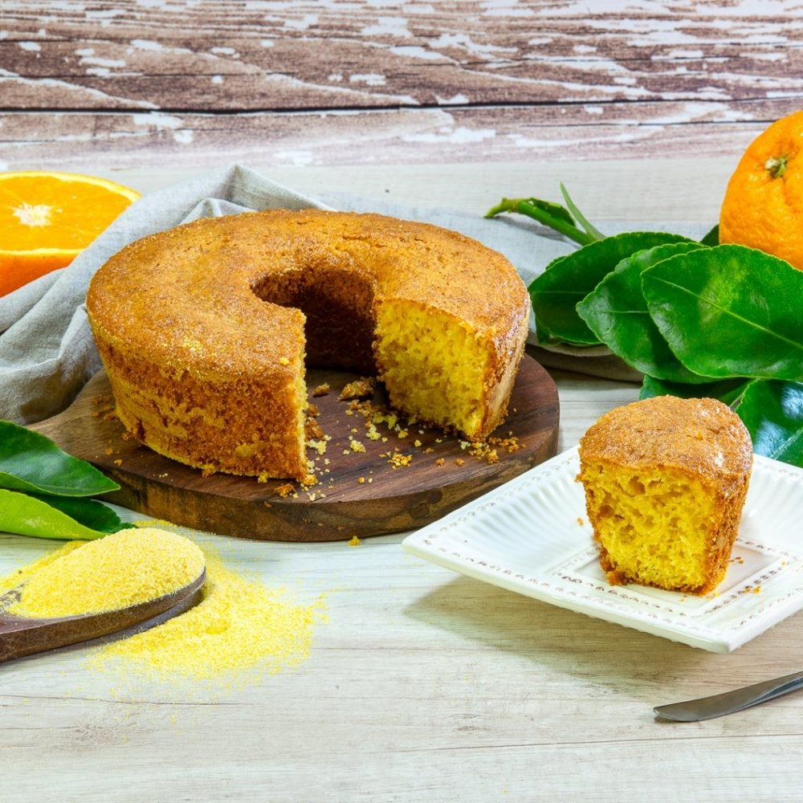

Doces · Tortas e bolos
Bolo de laranja

Ingredientes
- ½ xícara de óleo
- 2 xícaras de açúcar
- 4 gemas
- 2 xícaras de fubá
- 1 xícara de farinha de trigo
- 1 colher (sopa) de fermento em pó
- 1 xícara de suco de laranja
- 4 claras batidas em neve
- Manteiga para untar
- Farinha de trigo para polvilhar
Modo de preparo
- Preaqueça o forno em temperatura média (180 °C). Bata o óleo, o açúcar e as gemas até obter um creme.
- Numa tigela, peneire o fubá, a farinha de trigo e o fermento em pó. Misture bem e acrescente ao creme de gemas alternando com o suco de laranja.
- Por último, junte as claras em neve. Despeje numa fôrma redonda grande, com buraco no meio, untada com manteiga e polvilhada com farinha de trigo. Asse no forno preaquecido por 45 minutos. Retire do forno, deixe esfriar, desenforme num prato e congele.
Observação
Quando for congelar bolos feitos em fôrmas com buraco no meio, preencha o espaço vazio do buraco com plástico antes de levar ao freezer. Congelamento: cubra o bolo com plástico e leve ao freezer até congelar; retire-o do prato, embrulhe em filme plástico, etiquete e congele. Descongelamento: em temperatura ambiente por cerca de 2 horas.